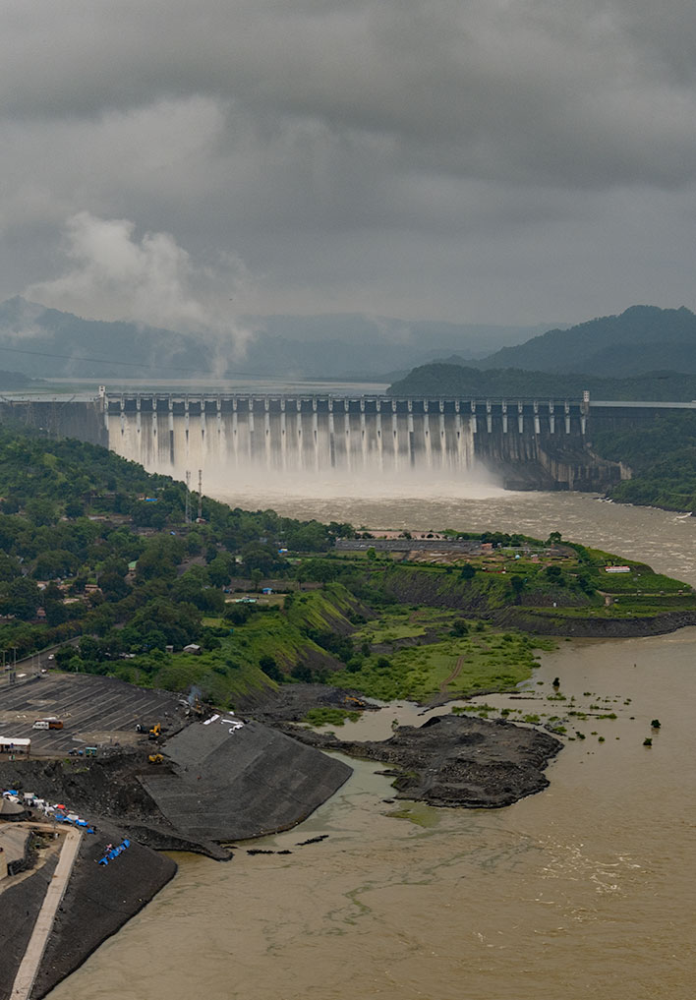
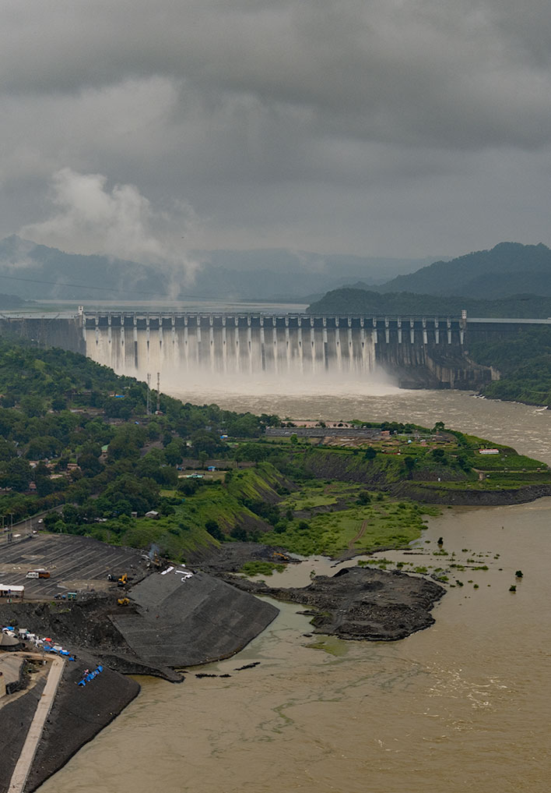
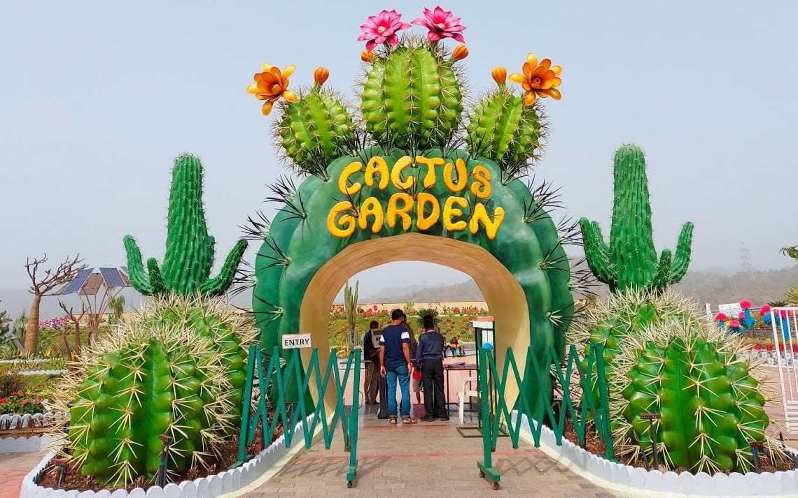
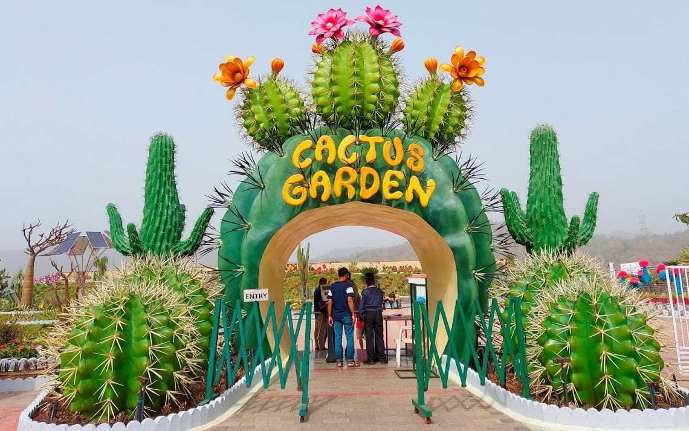

HISTORY
The Statue of Unity is dedicated to Sardar Vallabhbhai Patel who was an active freedom fighter and politician. Sardar Patel was independent India’s first Deputy Prime Minister and Home Minister. Historians give huge credit to Sardar Patel for his great contribution to uniting the princely states which led to the formation of the Union of India. Sardar Vallabhbhai Patel is also known as the ‘Iron Man of India’, which is why iron is one of the primary elements used for the construction of the statue.; The design of the statue was conceptualized by the Padma Shri and Padma Bhushan award holder sculptor, Ram Vanjhi Sutar. The statue has been divided into 5 zones out of which, 3 are open for tourists while 2 can only be accessed by the officials and engineers. These zones comprise a museum, a garden, and a viewing gallery. Experts claim that the statue will turn green in color in the next 100 years due to acid rain, the natural aging process, and as a result of pollution and environment-aided chemical reactions that will take place over time.

 


 
